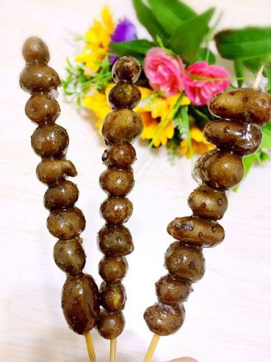

山药豆糖葫芦
山药豆糖葫芦是以山药豆为核心原料制作的糖衣甜品，主要通过蒸制山药豆后穿签、熬制糖浆包裹成型。制作工艺包含山药豆预处理（需蒸煮10-15分钟至熟透）、穿签定型（每串3-5颗成迷你造型）、糖浆熬制（常用冰糖或麦芽糖与水按1:1至3:1比例熬至琥珀色）三大关键步骤。成品外层糖衣晶莹透亮，入口兼具脆甜糖壳与绵软豆粒的双重口感，冬季常见于街头摊位，单串市场售价约4元（含12颗）。
该菜品兼具食补价值，山药豆含蛋白质、钾元素及助消化的糊精成分，传统医学认为其具有益肾固精、养肺滋阴的功效。制作过程注重糖浆火候控制，需通过气泡变化和冷水测试（糖衣脆而不粘牙）判断熬糖终点。
食材特性
主料山药豆为薯蓣科植物块茎，直径约1-2厘米呈不规则球形，表皮黄褐色带须根，其淀粉中糊精含量较普通山药更高，更易被人体消化吸收。传统配方使用麦芽糖熬制糖衣，现代改良版多采用冰糖替代，部分家庭制作使用白砂糖。
食用价值
每100克成品约含碳水化合物28克、蛋白质2.3克，钾元素含量达213毫克。中医理论认为其性平味甘，归脾、肺、肾经，适合调理脾胃虚弱。外层糖衣可提供快速能量补充，但糖尿病患者需控制摄入量。
地域特征
该甜品在华北地区冬季集中上市，河北保定地区发展出"单颗精制"工艺，使用直径2cm以上大颗粒山药豆单独裹糖；山西太原版本则保留带皮制作传统。截止至2024年，电商平台出现真空包装的工业化产品。